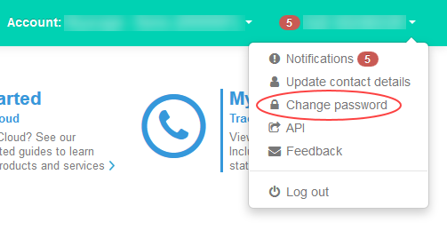
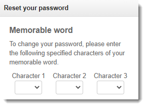

How to change or reset your UKCloud Portal password or memorable word
Overview
Any Portal user can change their own password at any time. If you forget your password, you can request for it to be reset and an email with a reset link will be sent to your password reset email address.
When you contact UKCloud Support or when you perform certain tasks in the Portal, you may be asked to provide letters from a memorable word to further identify yourself. You can change your memorable word at any time. Portal administrator's can also reset another user's memorable word.
Note
In the event that an administrator requires a password reset, or memorable word reset with no other administrator available, contact UKCloud Support on 01252 303300 and select option 2.
Intended audience
This article is intended for Portal users who need to change or reset their password or memorable word.
To change your own password or memorable word, you must have access to your Portal account. To change another user's memorable word, you must be a Portal administrator.
Changing your own password or memorable word
You may want to change your password or memorable word if:
You've been using the same one for a while (we recommend that you change your password at least every 90 days)
You want to make it more robust
You believe it may have been compromised
To change your password or memorable word:
Log in to the UKCloud Portal as usual.
In the toolbar, click your username, and select Change password.

Enter your Current password to confirm your identity.
Enter your new password or memorable word as required then click Save.

Resetting a forgotten password
If you forget your password and cannot log in to the Portal, you can request a link to reset your password.
The reset link will be sent to your password reset email address. By default, this is the same as the email address you use to log in to the Portal. If you want to send password reset links to a different email address, you can change your password reset email address. For more information, see How to set your password reset email address.
To request a password reset link:
On the Portal Log in page, click the Forgotten password? link.

On the Forgotten password page, enter the email address that you use to log in to the Portal, then click Request password reset.

Check your email account for a message from UKCloud Support, and click the link to reset your password.

On the Reset your password page, you'll first need to enter characters from your memorable word to confirm your identity.

Note
If you enter your memorable word characters incorrectly too many times your account will be locked. If this happens, you'll need to contact your administrator or UKCloud Customer Support to unlock your account.
Enter and confirm your new password then click Reset password.

Return to the Portal log in page to log in using your new password.
Resetting another user's memorable word
If a user forgets their memorable word and is unable to reset it themselves, a Portal administrator can reset it:
Log in to the UKCloud Portal as an administrator.
In the navigation panel, expand Contacts then select All contacts.

Locate the user and click the Edit button for that user.

On the Edit contact tab, select the User tab.
Update the memorable word as required then click Save.
Related articles
Feedback
If you find a problem with this article, click Improve this Doc to make the change yourself or raise an issue in GitHub. If you have an idea for how we could improve any of our services, send an email to feedback@ukcloud.com.